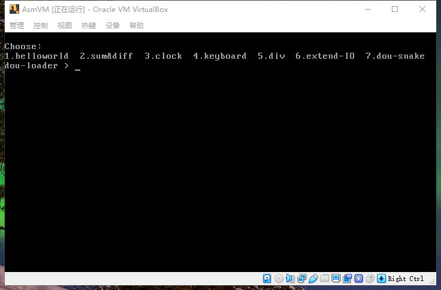
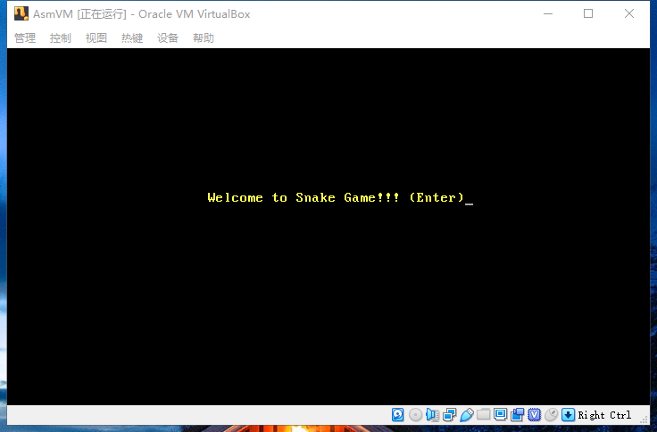
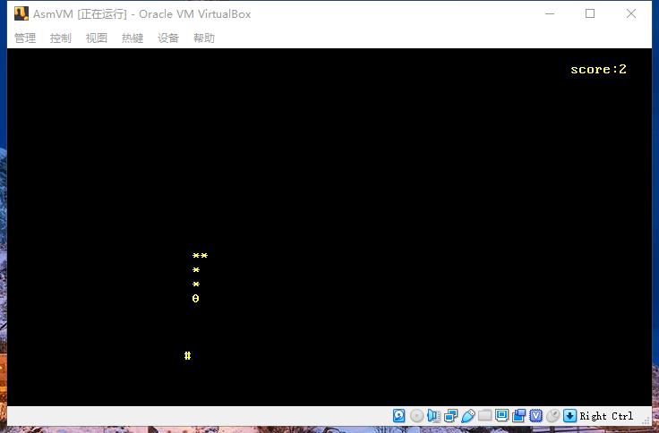
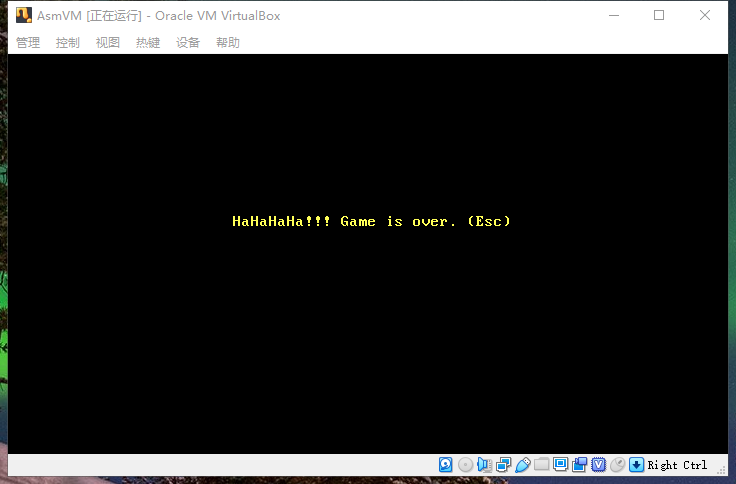

0. 前言
出于汇编语言课程设计要求，设计一个由nasm汇编语言编写的贪吃蛇程序，可在“裸机”上运行。
详细代码见github。
1. 需求分析
- 一个正常的贪吃蛇程序
- 由nasm汇编语言编写
- 在“裸机”上单独运行，或由自创加载器加载运行
2. 数据结构设计
需要设定的全局变量如下：
snake: 蛇身，由N个结点组成(由于纯汇编只有静态数组，所以必须固定蛇身长度的上限进行内存分配)。每个结点4字节，包含的数据如下：- 结点位置：
- 行号，1字节
- 列号，1字节
- 方向，1字节
- 图案，1字节
- 结点位置：
snake_len: 蛇长度，4字节dir: 方向，1字节speed: 蛇前进速度，1字节fruit_pos: 果子位置，2字节：- 行号，1字节
- 列号，1字节
score: 分数，4字节xxx_msg: 各类提示信息，字符串形式is_game_over: 游戏是否结束，1字节
全局常量如下：
snake_len_max: 蛇身最大长度snake_head_pat: 蛇头图案snake_node_pat: 蛇身结点图案
3. 程序流程架构
在贪吃蛇程序中，应该包含两个“线程”，线程A负责等待用户按键，线程B负责 snake 的前进、检查、更新等操作。
两个线程不受另一方影响，比如线程A在等待用户按键而停滞时，线程B会让 snake 不断前进。
那么问题来了，汇编怎么实现多线程呢？
其实，我们平时遇见的多线程(多进程)，本质上是快速交替运行的程序。而在某一个时刻，只有一个程序在CPU运行，但由于快速(毫秒级)交替运行，所以我们看起来像是同时运行的。究其本质，是由操作系统根据一个定时器中断，每过一会儿(毫秒)就帮我们切换运行程序，从而营造出来的假象。(不考虑多CPU)
所以，问题的关键在于定时器中断。首先，它并不是由操作系统提供，而是由硬件产生，所以在没有操作系统的“裸机”上，也能实现多线程/进程。
综上所述，我们只需要将线程B交给定时器中断调用，而线程A由自己运行，那么就可以实现两者同时运行、互不影响。
在下述流程中，Begin即线程A，new_int_1CH即线程B。
1 | Begin: |
自顶向下设计，不考虑子函数的实现细节。
4. 难点分析
- 定时器，定时移动snake
- 生成随机数
解决方案：
INT 8定时器中断，每过55ms就会被触发一次。在INT 8中断程序中，会调用INT 1CH中断，而原本的INT 1CH程序只包含一条返回语句。所以，只需重写INT 1CH中断程序，即可实现定时器功能。获取随机数：
1
2
3
4
5
6
7
8
9
10mov ax, 0h ; 间隔定时器
out 43h, al ; 通过端口43h
in al, 40h
in al, 40h
in al, 40h ; 访问3次，保证随机性
mov bl, 20
div bl ; ax/bl(20) = al......ah
mov al, ah ; 余数
mov ah, 0
add al, 1 ; 1-20的随机数
5. 具体实现
代码见github。
由于生成的贪吃蛇二进制程序超过512字节，不能单独做为MBR程序，所以需要由加载器加载，方能运行。
加载器代码见dou-loader。
运行截图如下：

输入7，进入贪吃蛇程序：

Enter键开始：

按w,d,s,a键，上右下左移动贪吃蛇。撞到边界或者自身，游戏结束：

6. 心得
项目总结：
- 贪吃蛇程序的分析——2小时
- 编写贪吃蛇程序——8小时
- 代码行数——580
此次项目的完成进度超出预算，其原因如下：
- 前期基础准备，加载器、时钟中断、键盘中断、IO中断等程序的编写，充分锻炼了汇编代码编写能力。
- 编码前的项目程序分析十分关键，这使得编码有目的、有依据，而不是凭空想象。其实，这就是软件工程的作用之处，需求分析、概要设计、详细设计、难点解决等。
- 相对完善、便于理解的注释，一手编码一手注释，很关键。